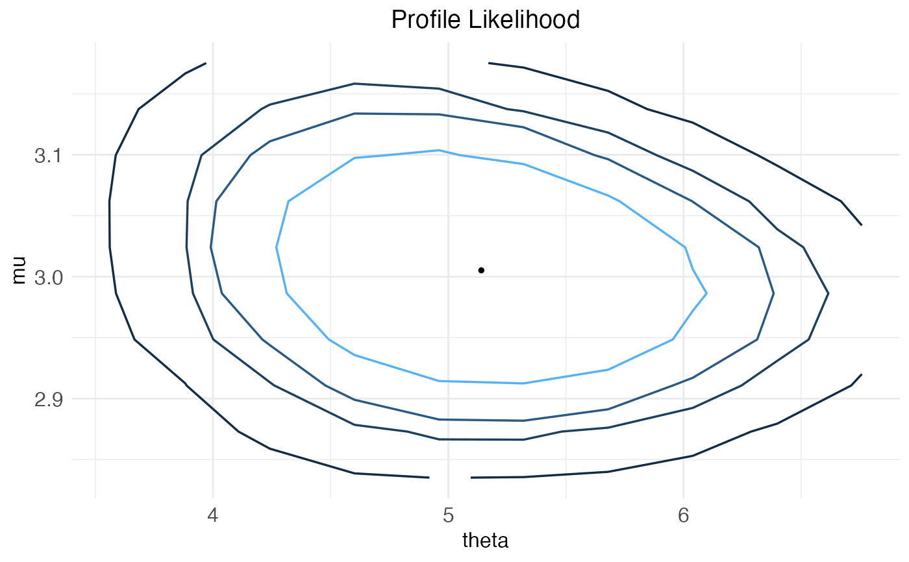

#' Plot a profile likelihood ctsmTMB object
Usage
# S3 method for ctsmTMB.profile
plot(x, y, include.opt = TRUE, ...)Arguments
- x
a profile.ctsmTMB object
- y
not in use
- include.opt
boolean which indicates whether or not to include the total likelihood optimizer in the plot.
- ...
additional arguments
Examples
library(ctsmTMB)
model <- ctsmTMB$new()
# create model
model$addSystem(dx ~ theta * (mu+u-x) * dt + sigma_x*dw)
model$addObs(y ~ x)
model$setVariance(y ~ sigma_y^2)
model$addInput(u)
model$setParameter(
theta = c(initial = 1, lower=1e-5, upper=50),
mu = c(initial=1.5, lower=0, upper=5),
sigma_x = c(initial=1, lower=1e-10, upper=30),
sigma_y = 1e-2
)
model$setInitialState(list(1,1e-1))
# fit model to data
fit <- model$estimate(Ornstein)
#> Building model...
#> Checking data...
#> Constructing objective function and derivative tables...
#> ...took: 0.089 seconds.
#> Minimizing the negative log-likelihood...
#> 0: 159.30847: 1.00000 1.50000 1.00000
#> 1: 154.15990: 0.826082 1.71820 1.96028
#> 2: 136.01211: 0.614019 2.04466 1.64652
#> 3: 129.29879: 0.625113 2.06221 1.47868
#> 4: 128.42258: 0.666452 2.12632 1.14915
#> 5: 122.27008: 0.825282 2.37200 1.31892
#> 6: 106.61489: 1.59116 3.48574 1.25982
#> 7: 101.72505: 2.18624 3.49501 1.18917
#> 8: 99.610055: 2.43782 3.00283 0.957522
#> 9: 91.160123: 3.00760 2.93833 1.13182
#> 10: 87.333934: 3.60427 2.95994 1.07975
#> 11: 86.392347: 3.62036 3.05856 1.06026
#> 12: 85.804273: 4.02690 3.03800 1.04788
#> 13: 85.776558: 4.04412 3.02977 1.06498
#> 14: 85.771776: 4.04182 3.03209 1.06035
#> 15: 85.771772: 4.04188 3.03208 1.06018
#> 16: 85.771772: 4.04186 3.03210 1.06019
#> 17: 85.771772: 4.04186 3.03210 1.06019
#> Optimization finished!:
#> Elapsed time: 0.006 seconds.
#> The objective value is: 8.577177e+01
#> The maximum gradient component is: 2.7e-05
#> The convergence message is: relative convergence (4)
#> Iterations: 17
#> Evaluations: Fun: 25 Grad: 18
#> See stats::nlminb for available tolerance/control arguments.
#> Returning results...
#> Finished!
# calculate profile likelihood
out <- profile(fit,parlist=list(theta=NULL))
#> Iteration: 1 / 10
#> Iteration: 2 / 10
#> Iteration: 3 / 10
#> Iteration: 4 / 10
#> Iteration: 5 / 10
#> Iteration: 6 / 10
#> Iteration: 7 / 10
#> Iteration: 8 / 10
#> Iteration: 9 / 10
#> Iteration: 10 / 10
# plot profile
plot(out)
